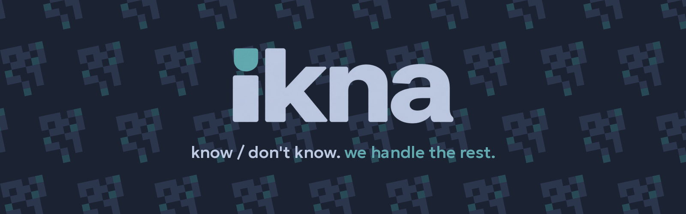

Открытое приложение карточек для изучения языков и других тем в контексте. Повторения планирует FSRS-6, дневную нагрузку регулирует riar-manage, а вся история хранится локально на устройстве.
Сделано так, чтобы внимание уходило на обучение, а не на возню с очередями, аккаунтами и искусственными сериями.
Приложение


